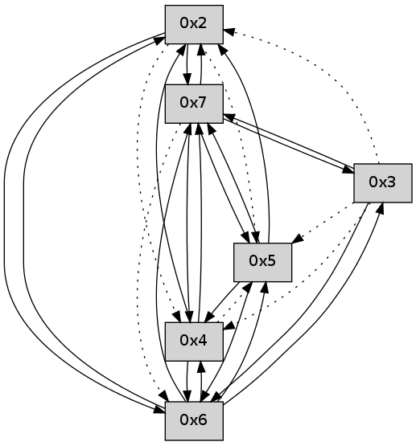

>> << IDX [start] -5 +0 +5 +25 +100 [20.1730079651]
 Previous packets
----------------------------------------------------------------------
15.015388 beacon01(faad) #0 coord=01 cycle=112.0ms assoc
-- color-indic=0 64 7f 59
----------------------------------------------------------------------
15.137464 beacon01(faad) #0 coord=01 cycle=112.0ms assoc
-- color-indic=0 64 1c 19
----------------------------------------------------------------------
15.259541 beacon01(faad) #0 coord=01 cycle=112.0ms assoc
-- color-indic=0 64 1e c3
----------------------------------------------------------------------
15.381617 beacon01(faad) #0 coord=01 cycle=112.0ms assoc
-- color-indic=0 64 7d 83
----------------------------------------------------------------------
15.503693 beacon01(faad) #0 coord=01 cycle=112.0ms assoc
-- color-indic=0 64 d8 43
----------------------------------------------------------------------
15.625769 beacon01(faad) #0 coord=01 cycle=112.0ms assoc
-- color-indic=0 64 bb 03
----------------------------------------------------------------------
15.747844 beacon01(faad) #0 coord=01 cycle=112.0ms assoc
-- color-indic=0 64 83 ca
----------------------------------------------------------------------
15.869920 beacon01(faad) #0 coord=01 cycle=112.0ms assoc
-- color-indic=0 64 e0 8a
----------------------------------------------------------------------
15.991996 beacon01(faad) #0 coord=01 cycle=112.0ms assoc
-- color-indic=0 64 45 4a
----------------------------------------------------------------------
16.114072 beacon01(faad) #0 coord=01 cycle=112.0ms assoc
-- color-indic=0 64 26 0a
----------------------------------------------------------------------
16.236148 beacon01(faad) #0 coord=01 cycle=112.0ms assoc
-- color-indic=0 64 b8 ba
16.248712 ..2e2100 -- association-request >>>> 0001
16.250304 ..2e2100 -- association-request >>>> 0001
16.251701 ..2e2100 -- association-request >>>> 0001
16.254598 ..2e2100 -- association-request >>>> 0001
16.255548 ..2e2100 -- association-request >>>> 0001
16.256634 ..2e2100 -- association-request >>>> 0001
16.258161 ..2e2100->..2e2100 -- association-response successful addr=0002
16.259548 ..2e2100 -- association-request >>>> 0001
16.260508 ..358369 -- association-request >>>> 0001
16.262193 ..2e2100->..2e2100 -- association-response successful addr=0002
16.264022 ..2e2100 -- association-request >>>> 0001
16.265084 ..2e2100->..2e2100 -- association-response successful addr=0002
16.266721 ..358369 -- association-request >>>> 0001
16.267862 ..2e2100 -- association-request >>>> 0001
16.268905 ..2e2100 -- association-request >>>> 0001
16.270541 ..2e2100 -- association-request >>>> 0001
16.272282 ..2e2100 -- association-request >>>> 0001
16.273441 ..2e2100 -- association-request >>>> 0001
16.274852 ..2e2100 -- association-request >>>> 0001
16.276264 ..2e2100 -- association-request >>>> 0001
16.277091 ..2e2100 -- association-request >>>> 0001
16.278275 ..2e2100 -- association-request >>>> 0001
16.279331 ..2e2100 -- association-request >>>> 0001
16.280835 ..2e2100 -- association-request >>>> 0001
16.283054 ..2e2100 -- association-request >>>> 0001
16.284016 ..2e2100->..358369 -- association-response successful addr=0003
16.285734 ..2e2100 -- association-request >>>> 0001
16.287431 ..2e2100 -- association-request >>>> 0001
16.288968 ..2e2100 -- association-request >>>> 0001
16.290228 ..2e2100 -- association-request >>>> 0001
16.291234 ..2e2100 -- association-request >>>> 0001
16.292168 ..2e2100 -- association-request >>>> 0001
16.293428 ..2e2100 -- association-request >>>> 0001
16.294762 ..2e2100 -- association-request >>>> 0001
16.295866 ..2e2100->..2e2100 -- association-response successful addr=0004
16.298317 ..2e2100 -- association-request >>>> 0001
16.300968 ..2e2100 -- association-request >>>> 0001
16.302892 ..2e2100 -- association-request >>>> 0001
16.304152 ..2e2100 -- association-request >>>> 0001
16.305536 ..2e2100 -- association-request >>>> 0001
16.307032 ..2e2100 -- association-request >>>> 0001
16.308115 ..2e2100->..2e2100 -- association-response successful addr=0005
16.309440 ..2e2100 -- association-request >>>> 0001
16.311719 ..2e2100 -- association-request >>>> 0001
16.313279 ..2e2100 -- association-request >>>> 0001
16.314427 ..2e2100 -- association-request >>>> 0001
16.315519 ..2e2100 -- association-request >>>> 0001
16.316959 ..2e2100->..2e2100 -- association-response successful addr=0005
16.319041 ..2e2100 -- association-request >>>> 0001
16.321266 ..2e2100 -- association-request >>>> 0001
----------------------------------------------------------------------
16.358224 beacon01(faad) #0 coord=01,02,03,04,05 cycle=368.0ms assoc
-- color-indic=0 64 71 35
16.368184 beacon02(faad) #0 coord=01,02,03,04,05 cycle=368.0ms assoc 64 4b 94
16.378184 beacon03(faad) #0 coord=01,02,03,04,05 cycle=368.0ms assoc 64 83 3e
16.388184 beacon04(faad) #0 coord=01,02,03,04,05 cycle=368.0ms assoc 64 c8 72
16.398184 beacon05(faad) #0 coord=01,02,03,04,05 cycle=368.0ms assoc 64 00 d8
16.410321 ..2e2100->..2e2100 -- association-response successful addr=0006
16.413627 ..2e2100->..2e2100 -- association-response successful addr=0007
----------------------------------------------------------------------
16.776323 beacon01(faad) #0 coord=01,02,03,04,05,06,07 cycle=496.0ms assoc
-- color-indic=0 64 07 34
16.786292 beacon02(faad) #0 coord=01,02,03,04,05,06,07 cycle=496.0ms assoc 64 50 f1
16.796293 beacon03(faad) #0 coord=01,02,03,04,05,06,07 cycle=496.0ms assoc 64 fc 53
16.806292 beacon04(faad) #0 coord=01,02,03,04,05,06,07 cycle=496.0ms assoc 64 8b 26
16.816292 beacon05(faad) #0 coord=01,02,03,04,05,06,07 cycle=496.0ms assoc 64 27 84
16.826294 beacon06(faad) #0 coord=01,02,03,04,05,06,07 cycle=496.0ms assoc 64 c2 6b
16.836292 beacon07(faad) #0 coord=01,02,03,04,05,06,07 cycle=496.0ms assoc 64 6e c9
16.847262 PacketAnalysis.py:168: UserWarning: removing any superflous data
warnings.warn("removing any superflous data")
../../pkg-python/HipSens/Core/OperaPacketParse.py:164: UserWarning: energyClass removed
warnings.warn("energyClass removed")
[Hello(2): seq=0 sysInfo= stat=]
16.848845 [Hello(3): seq=0 sysInfo= stat=]
16.853449 [Hello(5): seq=0 sysInfo= stat=]
----------------------------------------------------------------------
17.342437 beacon01(faad) #0 coord=01,02,03,04,05,06,07 cycle=496.0ms assoc
-- color-indic=0 64 3c 02
17.352407 beacon02(faad) #0 coord=01,02,03,04,05,06,07 cycle=496.0ms assoc 64 6b c7
17.362406 beacon03(faad) #0 coord=01,02,03,04,05,06,07 cycle=496.0ms assoc 64 c7 65
17.372407 beacon04(faad) #0 coord=01,02,03,04,05,06,07 cycle=496.0ms assoc 64 b0 10
17.382406 beacon05(faad) #0 coord=01,02,03,04,05,06,07 cycle=496.0ms assoc 64 1c b2
17.392409 beacon06(faad) #0 coord=01,02,03,04,05,06,07 cycle=496.0ms assoc 64 f9 5d
17.402406 beacon07(faad) #0 coord=01,02,03,04,05,06,07 cycle=496.0ms assoc 64 55 ff
17.414398 [Hello(7): seq=0 asym=2,3,5 sysInfo= stat=2:0,0,0,0/3:0,0,0,0/5:0,0,0,0]
17.417426 [Hello(6): seq=0 asym=2,3,5 sysInfo= stat=2:0,0,0,0/3:0,0,0,0/5:0,0,0,0]
----------------------------------------------------------------------
17.908551 beacon01(faad) #0 coord=01,02,03,04,05,06,07 cycle=496.0ms assoc
-- color-indic=0 64 9d 80
17.918519 beacon02(faad) #0 coord=01,02,03,04,05,06,07 cycle=496.0ms assoc 64 ca 45
17.928519 beacon03(faad) #0 coord=01,02,03,04,05,06,07 cycle=496.0ms assoc 64 66 e7
17.938519 beacon04(faad) #0 coord=01,02,03,04,05,06,07 cycle=496.0ms assoc 64 11 92
17.948520 beacon05(faad) #0 coord=01,02,03,04,05,06,07 cycle=496.0ms assoc 64 bd 30
17.958521 beacon06(faad) #0 coord=01,02,03,04,05,06,07 cycle=496.0ms assoc 64 58 df
17.968520 beacon07(faad) #0 coord=01,02,03,04,05,06,07 cycle=496.0ms assoc 64 f4 7d
17.983225 [Hello(4): seq=1 asym=5,7,6 sysInfo= stat=5:0,0,0,0/7:0,0,0,0/6:0,0,0,0]
17.992982 [Hello(2): seq=1 sym=7,6 asym=4,5 sysInfo= stat=7:0,0,0,0/6:0,0,0,0/4:0,0,0,0/5:0,0,0,0]
----------------------------------------------------------------------
18.474667 beacon01(faad) #0 coord=01,02,03,04,05,06,07 cycle=496.0ms assoc
-- color-indic=0 64 a6 b6
18.484636 beacon02(faad) #0 coord=01,02,03,04,05,06,07 cycle=496.0ms assoc 64 f1 73
18.504637 beacon04(faad) #0 coord=01,02,03,04,05,06,07 cycle=496.0ms assoc 64 2a a4
18.514637 beacon05(faad) #0 coord=01,02,03,04,05,06,07 cycle=496.0ms assoc 64 86 06
18.524637 beacon06(faad) #0 coord=01,02,03,04,05,06,07 cycle=496.0ms assoc 64 63 e9
18.534637 beacon07(faad) #0 coord=01,02,03,04,05,06,07 cycle=496.0ms assoc 64 cf 4b
18.545717 [Hello(6): seq=1 sym=2,4 asym=3,5 sysInfo= stat=2:1,0,0,0/4:0,0,0,0/3:0,0,0,0/5:0,0,0,0]
18.551634 [Hello(7): seq=1 sym=2,3,4 asym=5,6 sysInfo= stat=2:1,0,0,0/3:1,0,0,0/4:0,0,0,0/5:0,0,0,0/6:0,0,0,0]
----------------------------------------------------------------------
19.040781 beacon01(faad) #0 coord=01,02,03,04,05,06,07 cycle=496.0ms assoc
-- color-indic=0 64 eb ec
19.050753 beacon02(faad) #0 coord=01,02,03,04,05,06,07 cycle=496.0ms assoc 64 bc 29
19.060750 beacon03(faad) #0 coord=01,02,03,04,05,06,07 cycle=496.0ms assoc 64 10 8b
19.070750 beacon04(faad) #0 coord=01,02,03,04,05,06,07 cycle=496.0ms assoc 64 67 fe
19.080751 beacon05(faad) #0 coord=01,02,03,04,05,06,07 cycle=496.0ms assoc 64 cb 5c
19.090752 beacon06(faad) #0 coord=01,02,03,04,05,06,07 cycle=496.0ms assoc 64 2e b3
19.100751 beacon07(faad) #0 coord=01,02,03,04,05,06,07 cycle=496.0ms assoc 64 82 11
19.112774 [Hello(4): seq=2 sym=7,6,2 asym=5 sysInfo= stat=7:1,0,0,0/6:1,0,0,0/2:0,0,0,0/5:0,0,0,0]
19.116101 [Hello(5): seq=2 sym=7,6,4,2 sysInfo= stat=7:1,0,0,0/6:1,0,0,0/4:0,0,0,0/2:0,0,0,0]
19.120438 [Hello(2): seq=2 sym=7,6 asym=4,5 sysInfo= stat=7:1,0,0,0/6:1,0,0,0/4:0,0,0,0/5:0,0,0,0]
19.126642 [Hello(3): seq=2 sym=7,6 asym=5,4,2 sysInfo= stat=7:1,0,0,0/6:1,0,0,0/5:0,0,0,0/4:0,0,0,0/2:0,0,0,0]
----------------------------------------------------------------------
19.606894 beacon01(faad) #0 coord=01,02,03,04,05,06,07 cycle=496.0ms assoc
-- color-indic=0 64 d0 da
19.616864 beacon02(faad) #0 coord=01,02,03,04,05,06,07 cycle=496.0ms assoc 64 87 1f
19.626864 beacon03(faad) #0 coord=01,02,03,04,05,06,07 cycle=496.0ms assoc 64 2b bd
19.636865 beacon04(faad) #0 coord=01,02,03,04,05,06,07 cycle=496.0ms assoc 64 5c c8
19.646865 beacon05(faad) #0 coord=01,02,03,04,05,06,07 cycle=496.0ms assoc 64 f0 6a
19.656864 beacon06(faad) #0 coord=01,02,03,04,05,06,07 cycle=496.0ms assoc 64 15 85
19.666864 beacon07(faad) #0 coord=01,02,03,04,05,06,07 cycle=496.0ms assoc 64 b9 27
19.678258 [Hello(6): seq=2 sym=2,3,5,4,7 sysInfo= stat=2:2,0,0,0/3:1,0,0,0/5:1,0,0,0/4:1,0,0,0/7:0,0,0,0]
19.680643 [Hello(7): seq=2 sym=2,3,5,4 asym=6 sysInfo= stat=2:2,0,0,0/3:2,0,0,0/5:1,0,0,0/4:1,0,0,0/6:0,0,0,0]